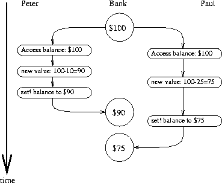
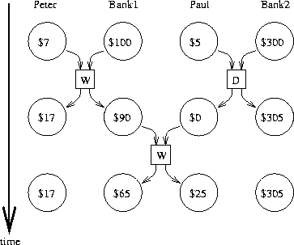

We've seen the power of computational objects with local state astools for modeling. Yet, as section 3.1.3warned, this power extracts a price: the loss of referentialtransparency, giving rise to a thicket of questions about sameness andchange, and the need to abandon the substitution model of evaluation infavor of the more intricate environment model.
The central issue lurking beneath the complexity of state, sameness,and change is that by introducing assignment we are forced to admittime into our computational models. Before we introducedassignment, all our programs were timeless, in the sense that anyexpression that has a value always has the same value. In contrast,recall the example of modeling withdrawals from a bank accountand returning the resulting balance,introduced at the beginning ofsection 3.1.1:
(withdraw 25) 75 (withdraw 25) 50
Here successive evaluations of the same expression yield differentvalues. This behavior arises from the fact that the execution ofassignment statements (in this case, assignments to the variable balance) delineates moments in time when values change. Theresult of evaluating an expression depends not only on the expressionitself, but also on whether the evaluation occurs before or afterthese moments. Building models in terms of computational objects withlocal state forces us to confront time as an essential concept inprogramming.
We can go further in structuring computational models to match ourperception of the physical world. Objects in the world do not changeone at a time in sequence. Rather we perceive them as acting concurrently – all at once. So it is often natural to model systemsas collections of computational processes that execute concurrently.Just as we can make our programs modular by organizing models interms of objects with separate local state, it is often appropriate todivide computational models into parts that evolve separately andconcurrently. Even if the programs are to be executed on a sequentialcomputer, the practice of writing programs as if they were to beexecuted concurrently forces the programmer to avoid inessentialtiming constraints and thus makes programs more modular.
In addition to making programs more modular, concurrent computationcan provide a speed advantage over sequential computation. Sequentialcomputers execute only one operation at a time, so the amount of timeit takes to perform a task is proportional to the total number ofoperations performed.34However, if it is possible to decompose a problem into pieces that arerelatively independent and need to communicate only rarely, it may bepossible to allocate pieces to separate computing processors,producing a speed advantage proportional to the number of processorsavailable.
Unfortunately, the complexities introduced by assignment become evenmore problematic in the presence of concurrency. The fact ofconcurrent execution, either because the world operates in parallel orbecause our computers do, entails additional complexity in ourunderstanding of time.
On the surface, time seems straightforward. Itis an ordering imposed on events.35For any events A and B, either A occurs before B, A and Bare simultaneous, or A occurs after B. For instance,returning to the bank account example, suppose that Peter withdraws$10 and Paul withdraws $25 from a joint account that initiallycontains $100, leaving $65 in the account. Depending on the orderof the two withdrawals, the sequence of balances in the account iseither $100 ⟶ $90 ⟶ $65 or$100 ⟶ $75 ⟶ $65. In a computer implementationof the banking system, this changing sequence of balances could bemodeled by successive assignments to a variable balance.
In complex situations, however, such a view can be problematic.Suppose that Peter and Paul, and other people besides, areaccessing the same bank account through a network of banking machinesdistributed all over the world. The actual sequence of balances inthe account will depend critically on the detailed timing of theaccesses and the details of the communication among the machines.
This indeterminacy in the order of events can pose serious problems inthe design of concurrent systems. For instance, suppose that thewithdrawals made by Peter and Paul are implemented as two separateprocesses sharing a common variable balance, each processspecified by the procedure given insection 3.1.1:
(define (withdraw amount) (if (>= balance amount) (begin (set! balance (- balance amount)) balance) "Insufficient funds"))
If the two processes operate independently, then Peter might test thebalance and attempt to withdraw a legitimate amount. However, Paulmight withdraw some funds in between the time that Peter checks thebalance and the time Peter completes the withdrawal, thus invalidatingPeter's test.
Things can be worse still. Consider the expression
(set! balance (- balance amount))
executed as part of each withdrawal process. This consists of threesteps: (1) accessing the value of the balance variable; (2)computing the new balance; (3) setting balance to this newvalue. If Peter and Paul's withdrawals execute this statementconcurrently, then the two withdrawals might interleave the order inwhich they access balance and set it to the new value.
The timing diagram in figure 3.29 depicts an order ofevents where balance starts at 100, Peter withdraws 10,Paul withdraws 25, and yet the final value of balance is 75. Asshown in the diagram, the reason for this anomaly is that Paul'sassignment of 75 to balance is made under the assumption thatthe value of balance to be decremented is 100. That assumption,however, became invalid when Peter changed balance to 90. Thisis a catastrophic failure for the banking system, because the totalamount of money in the system is not conserved. Before the transactions,the total amount of money was $100. Afterwards, Peter has $10, Paulhas $25, and the bank has $75.36
The general phenomenon illustratedhere is that several processes may share acommon state variable. What makes this complicated is that more thanone process may be trying to manipulate the shared state at the sametime. For the bank account example, during each transaction, eachcustomer should be able to act as if the other customers did notexist. When a customer changes the balance in a way that depends onthe balance, he must be able to assume that, just before the moment ofchange, the balance is still what he thought it was.
The above example typifies the subtle bugs that can creep intoconcurrent programs. The root of this complexity lies in theassignments to variables that are shared among the differentprocesses. We already know that we must be careful in writingprograms that use set!, because the results of a computationdepend on the order in which the assignments occur.37With concurrent processes we must be especially careful aboutassignments, because we may not be able to control the order of theassignments made by the different processes. If several such changesmight be made concurrently (as with two depositors accessing a jointaccount) we need some way to ensure that our system behaves correctly.For example, in the case of withdrawals from a joint bank account, wemust ensure that money is conserved.To make concurrent programs behave correctly, we may have toplace some restrictions on concurrent execution.
|  |
One possible restriction on concurrency wouldstipulate that no two operations thatchange any shared state variables can occur at the same time. This is anextremely stringent requirement. For distributed banking, it wouldrequire the system designer to ensure that only one transaction couldproceed at a time. This would be both inefficient and overlyconservative. Figure 3.30 shows Peter andPaul sharing a bank account, where Paul has a private account as well.The diagram illustrates two withdrawals from the shared account(one by Peter and one by Paul) and a deposit to Paul's private account.38The two withdrawals from the shared account must not beconcurrent (since both access and update the same account), and Paul'sdeposit and withdrawal must not be concurrent (since both access andupdate the amount in Paul's wallet).But there should be no problempermitting Paul's deposit to his private account to proceedconcurrently with Peter's withdrawal from the shared account.
|  |
A less stringent restriction on concurrency would ensure that aconcurrent system produces the same resultas if the processes had run sequentially in some order.There are two important aspects to this requirement.First, it does not require the processes to actually run sequentially,but only to produce results that are the same as if they had runsequentially. For the example infigure 3.30, the designer of the bank accountsystem can safely allow Paul's deposit and Peter's withdrawal tohappen concurrently, because the net result will be the same as if thetwo operations had happened sequentially. Second, there may be morethan one possible “correct” result produced by a concurrent program,because we require only that the result be the same as for somesequential order.For example, suppose that Peter and Paul's joint account starts outwith $100, and Peter deposits $40 while Paul concurrently withdrawshalf the money in the account.Then sequential execution could result in the account balance beingeither $70 or $90 (see exercise 3.38).39
There are still weaker requirements for correct execution ofconcurrent programs. A program for simulating diffusion (say, theflow of heat in an object) might consist of a large number ofprocesses, each one representing a small volume of space, that updatetheir values concurrently. Each process repeatedly changes itsvalue to the average of its own value and its neighbors' values.This algorithmconverges to the right answer independent of the order in which theoperations are done; there is no need for any restrictions onconcurrent use of the shared values.
Exercise 3.38. Suppose that Peter, Paul, and Mary share a joint bank account thatinitially contains $100. Concurrently, Peter deposits $10, Paulwithdraws $20, and Mary withdraws half the money in the account, byexecuting the following commands:
| Peter: | (set! balance (+ balance 10)) |
| Paul: | (set! balance (- balance 20)) |
| Mary: |
(set! balance (- balance (/ balance 2))) |
a. List all the different possible values for balance after thesethree transactions have been completed, assuming that the bankingsystem forces the three processes to run sequentially in some order.
b. What are some other valuesthat could be produced if the system allows the processes to be interleaved?Draw timing diagrams like the one in figure 3.29 toexplain how these values can occur.
We've seen that the difficulty in dealing with concurrent processes isrooted in the need to consider the interleaving of the order of eventsin the different processes. For example, suppose we have twoprocesses, one with three ordered events (a,b,c) and one with threeordered events (x,y,z). If the two processes run concurrently, withno constraints on how their execution is interleaved, then there are20 different possible orderings for the events that are consistentwith the individual orderings for the two processes:
(a, b, c, x, y, z) (a, x, b, y, c, z) (x, a, b, c, y, z) (x, a, y, z, b, c) (a, b, x, c, y, z) (a, x, b, y, z, c) (x, a, b, y, c, z) (x, y, a, b, c, z) (a, b, x, y, c, z) (a, x, y, b, c, z) (x, a, b, y, z, c) (x, y, a, b, z, c) (a, b, x, y, z, c) (a, x, y, b, c, z) (x, a, y, b, c, z) (x, y, a, z, b, c) (a, x, b, c, y, z) (a, x, y, z, b, c) (x, a, y, b, z, c) (x, y, z, a, b, c)
As programmers designing this system, we would have to consider theeffects of each of these 20 orderings and check that each behavior isacceptable. Such an approach rapidly becomes unwieldy as the numbersof processes and events increase.
A more practical approach to the design of concurrent systems is todevise general mechanisms that allow us to constrain the interleavingof concurrent processes so that we can be sure that the programbehavior is correct. Many mechanisms have been developed for thispurpose. In this section, we describe one of them, the serializer.
Serialization implements the following idea: Processes will executeconcurrently, but there will be certain collections of procedures thatcannot be executed concurrently. More precisely, serialization createsdistinguished sets of procedures such that only one execution of aprocedure in each serialized set is permitted to happen at a time.If some procedure in the set is being executed, then a process thatattempts to execute any procedure in the set will be forced to waituntil the first execution has finished.
We can use serialization to control access to shared variables.For example, if we want to update a shared variable based on theprevious value of that variable, we put the access to the previousvalue of the variable and the assignment of the new value to thevariable in the same procedure. We then ensure that no otherprocedure that assigns to the variable can run concurrently with thisprocedure by serializing all of these procedures with the sameserializer. This guarantees that the value of the variable cannot bechanged between an access and the corresponding assignment.
To make the above mechanism more concrete, suppose that we haveextended Scheme to include a procedure called parallel-execute:
(parallel-execute <p1> <p2> ... <pk>)
Each <p> must be a procedure of no arguments. Parallel-executecreates a separate process for each<p>, which applies <p> (to no arguments). These processes allrun concurrently.40
As an example of how this is used, consider
(define x 10) (parallel-execute (lambda () (set! x (* x x))) (lambda () (set! x (+ x 1))))
This creates two concurrent processes – P1, which sets x tox times x, and P2, which increments x. Afterexecution is complete, x will be left with one of five possiblevalues, depending on the interleaving of the events of P1 andP2:
| 101: |
P1 sets x to 100 and then P2 increments x to 101. |
| 121: |
P2 increments x to 11 and then P1 sets x tox times x. |
| 110: |
P2 changes x from 10 to 11 between the two times thatP1 accesses the value of x during the evaluation of (* x x). |
| 11: |
P2 accesses x, then P1 sets x to 100,then P2 sets x. |
| 100: |
P1 accesses x (twice), then P2 sets x to 11,then P1 sets x. |
We can constrain the concurrency by using serialized procedures,which are created by serializers. Serializers are constructed by make-serializer, whose implementation is given below. A serializertakes a procedure as argument and returns a serialized procedure thatbehaves like the original procedure. All calls to a given serializerreturn serialized procedures in the same set.
Thus, in contrast to the example above, executing
(define x 10) (define s (make-serializer)) (parallel-execute (s (lambda () (set! x (* x x)))) (s (lambda () (set! x (+ x 1)))))
can produce only two possible values for x, 101 or 121. Theother possibilities are eliminated, because the execution of P1 andP2 cannot be interleaved.
Here is a version of the make-account procedure fromsection 3.1.1, where the deposits andwithdrawals have been serialized:
(define (make-account balance) (define (withdraw amount) (if (>= balance amount) (begin (set! balance (- balance amount)) balance) "Insufficient funds")) (define (deposit amount) (set! balance (+ balance amount)) balance) (let ((protected (make-serializer))) (define (dispatch m) (cond ((eq? m 'withdraw) (protected withdraw)) ((eq? m 'deposit) (protected deposit)) ((eq? m 'balance) balance) (else (error "Unknown request -- MAKE-ACCOUNT" m)))) dispatch))
With this implementation, two processes cannot be withdrawing from ordepositing into a single account concurrently. This eliminates the sourceof the error illustrated in figure 3.29, where Peterchanges the account balance between the times when Paul accesses thebalance to compute the new value and when Paul actually performs theassignment. On the other hand, each account has its own serializer,so that deposits and withdrawals for different accounts can proceedconcurrently.
Exercise 3.39. Which of the five possibilities in the parallel execution shown aboveremain if we instead serialize execution as follows:
(define x 10) (define s (make-serializer)) (parallel-execute (lambda () (set! x ((s (lambda () (* x x)))))) (s (lambda () (set! x (+ x 1)))))
Exercise 3.40. Give all possible values of x that can result from executing
(define x 10) (parallel-execute (lambda () (set! x (* x x))) (lambda () (set! x (* x x x))))
Which of these possibilities remain if we instead use serializedprocedures:
(define x 10) (define s (make-serializer)) (parallel-execute (s (lambda () (set! x (* x x)))) (s (lambda () (set! x (* x x x)))))
Exercise 3.41. Ben Bitdiddle worries that it would be better to implement the bankaccount as follows (where the commented line has been changed):
(define (make-account balance) (define (withdraw amount) (if (>= balance amount) (begin (set! balance (- balance amount)) balance) "Insufficient funds")) (define (deposit amount) (set! balance (+ balance amount)) balance) ;; continued on next page (let ((protected (make-serializer))) (define (dispatch m) (cond ((eq? m 'withdraw) (protected withdraw)) ((eq? m 'deposit) (protected deposit)) ((eq? m 'balance) ((protected (lambda () balance)))) ; serialized (else (error "Unknown request -- MAKE-ACCOUNT" m)))) dispatch))
because allowing unserialized access to the bank balance can result inanomalous behavior. Do you agree? Is there any scenario thatdemonstrates Ben's concern?
Exercise 3.42. Ben Bitdiddle suggests that it's a waste of time to create a newserialized procedure in response to every withdraw and deposit message. He says that make-account could be changed sothat the calls to protected are done outside the dispatchprocedure. That is, an account would return the same serializedprocedure (which was created at the same time as the account) each timeit is asked for a withdrawal procedure.
(define (make-account balance) (define (withdraw amount) (if (>= balance amount) (begin (set! balance (- balance amount)) balance) "Insufficient funds")) (define (deposit amount) (set! balance (+ balance amount)) balance) (let ((protected (make-serializer))) (let ((protected-withdraw (protected withdraw)) (protected-deposit (protected deposit))) (define (dispatch m) (cond ((eq? m 'withdraw) protected-withdraw) ((eq? m 'deposit) protected-deposit) ((eq? m 'balance) balance) (else (error "Unknown request -- MAKE-ACCOUNT" m)))) dispatch)))
Is this a safe change to make? In particular, is there any difference inwhat concurrency is allowed by these two versions of make-account ?
Serializers provide a powerful abstraction that helps isolate thecomplexities of concurrent programs so that they can be dealt withcarefully and (hopefully) correctly. However, while using serializersis relatively straightforward when there is only a single sharedresource (such as a single bank account), concurrent programming canbe treacherously difficult when there are multiple shared resources.
To illustrate one of the difficulties that can arise, suppose we wish to swapthe balances in two bank accounts. We access each account to find thebalance, compute the difference between the balances, withdraw thisdifference from one account, and deposit it in the other account. Wecould implement this as follows:41
(define (exchange account1 account2) (let ((difference (- (account1 'balance) (account2 'balance)))) ((account1 'withdraw) difference) ((account2 'deposit) difference)))
This procedure works well when only a single process is trying to dothe exchange. Suppose, however, that Peter and Paul both have accessto accounts a1, a2, and a3, and thatPeter exchanges a1 anda2 while Paul concurrently exchanges a1 and a3.Even with account deposits and withdrawalsserialized for individual accounts (as in the make-accountprocedure shown above in this section), exchange can stillproduce incorrect results. For example, Peter might compute thedifference in the balances for a1 and a2, but then Paulmight change the balance in a1 before Peter is able to completethe exchange.42For correct behavior, we must arrange for the exchange procedureto lock out any other concurrent accesses to the accounts during theentire time of the exchange.
One way we can accomplish this is by using both accounts' serializersto serialize the entire exchange procedure.To do this, we will arrange for access to an account's serializer.Note that we are deliberatelybreaking the modularity of the bank-account object by exposing theserializer. The following version of make-account is identicalto the original version given insection 3.1.1, except that a serializer isprovided to protect the balance variable, and the serializer isexported via message passing:
(define (make-account-and-serializer balance) (define (withdraw amount) (if (>= balance amount) (begin (set! balance (- balance amount)) balance) "Insufficient funds")) (define (deposit amount) (set! balance (+ balance amount)) balance) (let ((balance-serializer (make-serializer))) (define (dispatch m) (cond ((eq? m 'withdraw) withdraw) ((eq? m 'deposit) deposit) ((eq? m 'balance) balance) ((eq? m 'serializer) balance-serializer) (else (error "Unknown request -- MAKE-ACCOUNT" m)))) dispatch))
We can use this to do serialized deposits and withdrawals. However,unlike our earlier serialized account, it is now the responsibility ofeach user of bank-account objects to explicitly manage theserialization, for example as follows:43
(define (deposit account amount) (let ((s (account 'serializer)) (d (account 'deposit))) ((s d) amount)))
Exporting the serializer in this way gives us enough flexibility toimplement a serialized exchange program. We simplyserialize the originalexchange procedure with the serializers for both accounts:
(define (serialized-exchange account1 account2) (let ((serializer1 (account1 'serializer)) (serializer2 (account2 'serializer))) ((serializer1 (serializer2 exchange)) account1 account2)))
Exercise 3.43. Suppose that the balances in three accounts start out as $10, $20,and $30, and that multiple processes run, exchanging the balances inthe accounts. Argue that if the processes are run sequentially,after any number of concurrent exchanges, the account balances should be$10, $20, and $30 in some order.Draw a timing diagram like the one in figure 3.29 toshow how this condition can be violated if the exchanges areimplemented using the first version of the account-exchange program inthis section. On the other hand, argue that even with this exchange program, the sum of the balances in the accounts will bepreserved. Draw a timing diagram to show how even this condition wouldbe violated if we did not serialize the transactionson individual accounts.
Exercise 3.44. Consider the problem of transferring an amount from one account toanother. Ben Bitdiddle claims that this can be accomplished with thefollowing procedure, even if there are multiple people concurrentlytransferring money among multiple accounts, using any accountmechanism that serializes deposit and withdrawal transactions, forexample, the version of make-account in the text above.
(define (transfer from-account to-account amount) ((from-account 'withdraw) amount) ((to-account 'deposit) amount))
Louis Reasoner claims that there is a problem here, and that we needto use a more sophisticated method, such as the one required fordealing with the exchange problem. Is Louis right? If not, what isthe essential difference between the transfer problem and the exchangeproblem? (You should assume that the balance in from-accountis at least amount.)
Exercise 3.45. Louis Reasoner thinks our bank-account system is unnecessarily complex anderror-prone now that deposits and withdrawals aren't automatically serialized.He suggests that make-account-and-serializer should haveexported the serializer (for use by such procedures asserialized-exchange) in addition to (rather than instead of)using it to serialize accounts and deposits as make-account did.He proposes to redefine accounts as follows:
(define (make-account-and-serializer balance) (define (withdraw amount) (if (>= balance amount) (begin (set! balance (- balance amount)) balance) "Insufficient funds")) (define (deposit amount) (set! balance (+ balance amount)) balance) (let ((balance-serializer (make-serializer))) (define (dispatch m) (cond ((eq? m 'withdraw) (balance-serializer withdraw)) ((eq? m 'deposit) (balance-serializer deposit)) ((eq? m 'balance) balance) ((eq? m 'serializer) balance-serializer) (else (error "Unknown request -- MAKE-ACCOUNT" m)))) dispatch))
Then deposits are handled as with the original make-account:
(define (deposit account amount) ((account 'deposit) amount))
Explain what is wrong with Louis's reasoning. In particular,consider what happens when serialized-exchange is called.
We implement serializers in terms of a more primitive synchronizationmechanism called a mutex. A mutex is an object that supportstwo operations – the mutex can be acquired, and the mutex can bereleased. Once a mutex has been acquired, no other acquireoperations on that mutex may proceed until the mutex is released.44 In our implementation, eachserializer has an associated mutex. Given a procedure p, theserializer returns a procedure that acquires the mutex, runs p,and then releases the mutex. This ensures that only one of theprocedures produced by the serializer can be running at once, which isprecisely the serialization property that we need to guarantee.
(define (make-serializer) (let ((mutex (make-mutex))) (lambda (p) (define (serialized-p . args) (mutex 'acquire) (let ((val (apply p args))) (mutex 'release) val)) serialized-p)))
The mutex is a mutable object (here we'll use a one-elementlist, which we'll refer to as a cell) that can hold the valuetrue or false. When the value is false, the mutex is available to beacquired. When the value is true, the mutex is unavailable, and anyprocess that attempts to acquire the mutex must wait.
Our mutex constructor make-mutex begins by initializing the cellcontents to false. To acquire the mutex, we test the cell. If themutex is available, we set the cell contents to true and proceed.Otherwise, we wait in a loop, attempting to acquire over and overagain, until we find that the mutex is available.45 To release themutex, we set the cell contents to false.
(define (make-mutex) (let ((cell (list false))) (define (the-mutex m) (cond ((eq? m 'acquire) (if (test-and-set! cell) (the-mutex 'acquire))) ; retry ((eq? m 'release) (clear! cell)))) the-mutex)) (define (clear! cell) (set-car! cell false))
Test-and-set! tests the cell and returns the result of thetest. In addition, if the test was false, test-and-set! setsthe cell contents to true before returning false. We can express thisbehavior as the following procedure:
(define (test-and-set! cell) (if (car cell) true (begin (set-car! cell true) false)))
However, this implementation of test-and-set! does not sufficeas it stands. There is a crucial subtlety here, which is theessential place where concurrency control enters the system: The test-and-set! operation must be performed atomically. Thatis, we must guarantee that, once a process has tested the cell andfound it to be false, the cell contents will actually be set to truebefore any other process can test the cell. If we do not make thisguarantee, then the mutex can fail in a way similar to thebank-account failure in figure 3.29. (Seeexercise 3.46.)
The actual implementation of test-and-set! depends on thedetails of how our system runs concurrent processes. For example, wemight be executing concurrent processes on a sequential processorusing a time-slicing mechanism that cycles through the processes,permitting each process to run for a short time before interrupting itand moving on to the next process. In that case, test-and-set!can work by disabling time slicing during the testing and setting.46Alternatively, multiprocessing computers provide instructions thatsupport atomic operations directly in hardware.47
Exercise 3.46. Suppose that we implement test-and-set! using an ordinaryprocedure as shown in the text, without attempting to make the operationatomic. Draw a timing diagram like the one infigure 3.29 to demonstrate how the muteximplementation can fail by allowing two processes to acquire the mutexat the same time.
Exercise 3.47. A semaphore (of size n) is a generalization of a mutex. Like amutex, a semaphore supports acquire and release operations, but it ismore general in that up to n processes can acquire itconcurrently. Additional processes that attempt to acquire thesemaphore must wait for release operations. Give implementations ofsemaphores
a. in terms of mutexes
b. in terms of atomic test-and-set! operations.
Now that we have seen how to implement serializers, we can seethat account exchanging still has a problem, even with theserialized-exchange procedure above.Imagine that Peter attempts to exchange a1with a2 while Paul concurrently attempts to exchange a2with a1. Suppose that Peter's process reaches the point whereit has entered a serialized procedure protecting a1 and, justafter that, Paul's process enters a serialized procedure protectinga2. Now Peter cannot proceed (to enter a serialized procedureprotecting a2) until Paul exits the serialized procedureprotecting a2. Similarly, Paul cannot proceed until Peter exitsthe serialized procedure protecting a1. Each process is stalledforever, waiting for the other. This situation is called a deadlock. Deadlock is always a danger in systems that provideconcurrent access to multiple shared resources.
One way to avoid the deadlock in this situation is to give eachaccount a unique identification number and rewrite serialized-exchange sothat a process will always attempt to enter a procedure protecting thelowest-numbered account first. Although this method works well forthe exchange problem, there are other situations that require moresophisticated deadlock-avoidance techniques, or where deadlock cannotbe avoided at all. (See exercises 3.48and 3.49.)48
Exercise 3.48. Explain in detail why the deadlock-avoidance method described above,(i.e., the accounts are numbered, and each process attempts to acquirethe smaller-numbered account first) avoids deadlock in the exchangeproblem. Rewrite serialized-exchange to incorporate this idea.(You willalso need to modify make-account so that each account is createdwith a number, which can be accessed by sending an appropriatemessage.)
Exercise 3.49. Give a scenario where the deadlock-avoidance mechanism describedabove does not work. (Hint: In the exchange problem, each processknows in advance which accounts it will need to get access to. Consider asituation where a process must get access to some shared resources before itcan know which additional shared resources it will require.)
We've seen how programming concurrent systems requires controlling theordering of events when different processes access sharedstate, and we've seen how to achieve this control through judicioususe of serializers. But the problems of concurrencylie deeper than this, because, from a fundamental point of view, it'snot always clear what is meant by “shared state.”
Mechanisms such as test-and-set! require processes to examine aglobal shared flag at arbitrary times. This is problematic andinefficient to implement in modern high-speed processors, wheredue to optimization techniques such as pipelining and cached memory,the contents of memorymay not be in a consistent state at every instant. In contemporarymultiprocessing systems, therefore, the serializer paradigm is beingsupplanted by new approaches to concurrency control.49
The problematic aspects of shared state also arisein large, distributed systems. Forinstance, imagine adistributed banking system where individual branch banks maintainlocal values for bank balances and periodically compare these withvalues maintained by other branches. In such a system the value of“the account balance” would be undetermined, except right aftersynchronization.If Peter deposits money in an account he holdsjointly with Paul, when should we say that the account balance haschanged – when the balance in the local branch changes, or not untilafter the synchronization?And if Paul accesses the account from adifferent branch, what are the reasonable constraints to place on thebanking system such that the behavior is “correct”?The only thing that might matter forcorrectness is the behavior observed by Peter and Paul individuallyand the “state” of the account immediately after synchronization.Questions about the“real” account balance or the order of events between synchronizationsmay be irrelevant or meaningless.50
The basic phenomenon here is that synchronizing different processes,establishing shared state, or imposing an order on events requirescommunication among the processes. In essence, any notion of time inconcurrency control must be intimately tied to communication.51 It isintriguing that a similar connection between time and communicationalso arises in the Theory of Relativity, where the speed of light (thefastest signal that can be used to synchronize events) is afundamental constant relating time and space. Thecomplexities we encounter in dealing with time and state in ourcomputational models may in fact mirror a fundamental complexity ofthe physical universe.
34 Most real processors actually execute a fewoperations at a time, following a strategy called pipelining. Although this technique greatly improves the effectiveutilization of the hardware, it is used only to speed up the executionof a sequential instruction stream, while retaining the behavior ofthe sequential program.
35 To quote some graffiti seen on a Cambridgebuilding wall: “Time is a device that was invented to keep everythingfrom happening at once.”
36 An even worse failure for this systemcould occur if the two set! operations attempt to change thebalance simultaneously, in which case the actual data appearing inmemory might end up being a random combination of the informationbeing written by the two processes. Most computers have interlocks onthe primitive memory-write operations, which protect against suchsimultaneous access. Even this seemingly simple kind of protection,however, raises implementation challenges in the design ofmultiprocessing computers, where elaborate cache-coherenceprotocols are required to ensure that the various processors willmaintain a consistent view of memory contents, despite the fact thatdata may be replicated (“cached”) among the different processors toincrease the speed of memory access.
37 The factorial program insection 3.1.3 illustrates this for a singlesequential process.
38 The columns show the contents of Peter's wallet,the joint account (in Bank1), Paul's wallet, and Paul's private account(in Bank2), before and after each withdrawal (W) and deposit (D).Peter withdraws $10 from Bank1; Paul deposits $5 in Bank2,then withdraws $25 from Bank1.
39 A more formal way to express this idea is to say thatconcurrent programs are inherently nondeterministic. Thatis, they are described not by single-valued functions, but byfunctions whose results are sets of possible values. Insection 4.3 we will study alanguage for expressing nondeterministiccomputations.
40 Parallel-execute is not part of standard Scheme, butit can be implemented in MIT Scheme. In our implementation, thenew concurrent processes also run concurrently with the originalScheme process. Also, in our implementation, the value returnedby parallel-execute is a special control object that can be usedto halt the newly created processes.
41 We have simplified exchange by exploiting the factthat our deposit message accepts negative amounts. (This is aserious bug in our banking system!)
42 If the account balances start out as $10,$20, and $30, then after any number of concurrent exchanges, thebalances should still be $10, $20, and$30 in some order. Serializing the deposits to individual accounts is notsufficient to guarantee this. See exercise 3.43.
43 Exercise 3.45 investigates whydeposits and withdrawals are no longer automatically serializedby the account.
44 The term “mutex” is an abbreviation for mutualexclusion. The general problem of arranging a mechanism that permitsconcurrent processes to safely share resources is called the mutualexclusion problem. Our mutex is a simple variant of the semaphore mechanism (see exercise 3.47), which wasintroduced in the “THE” Multiprogramming System developed at theTechnological University of Eindhoven and named for the university'sinitials in Dutch (Dijkstra 1968a). The acquire andrelease operations were originally called P and V, from the Dutchwords passeren (to pass) and vrijgeven (to release), inreference to the semaphores used on railroad systems. Dijkstra'sclassic exposition (1968b) was one of the first to clearly present theissues of concurrency control, and showed how to use semaphores tohandle a variety of concurrency problems.
45 In mosttime-shared operating systems, processes that are blocked by a mutex donot waste time “busy-waiting” as above. Instead, the systemschedules another process to run while the first is waiting, and the blockedprocess is awakened when the mutex becomes available.
46 In MIT Scheme for a single processor, which uses a time-slicingmodel, test-and-set! can be implemented as follows:
(define (test-and-set! cell) (without-interrupts (lambda () (if (car cell) true (begin (set-car! cell true) false)))))
Without-interrupts disablestime-slicing interrupts while its procedure argument is being executed.
47 There are many variants of suchinstructions – including test-and-set, test-and-clear, swap,compare-and-exchange, load-reserve, and store-conditional – whosedesign must be carefully matched to the machine's processor-memoryinterface.One issue that arises here is to determine what happensif two processes attempt to acquire the same resourceat exactly the same time by using such an instruction.This requires some mechanismfor making a decision about which process gets control. Such amechanism is called an arbiter. Arbiters usually boil down tosome sort of hardware device.Unfortunately, it is possible to prove that one cannot physicallyconstruct a fair arbiter that works 100% of the time unless oneallows the arbiter an arbitrarily long time to make its decision. Thefundamental phenomenon here was originally observed by the fourteenth-centuryFrench philosopher Jean Buridan in his commentary onAristotle's De caelo. Buridan argued that a perfectly rationaldog placed between two equally attractive sources of food will starveto death, because it is incapable of deciding which to go to first.
48 The general technique for avoiding deadlock by numbering theshared resources and acquiring them in order is due to Havender(1968). Situations where deadlock cannot be avoided require deadlock-recovery methods, which entail having processes “back out”of the deadlocked state and try again. Deadlock-recoverymechanisms are widely used in database management systems, a topic thatis treated in detail in Gray and Reuter 1993.
49 One such alternative to serialization is called barriersynchronization. The programmer permits concurrent processes toexecute as they please, but establishes certain synchronization points(“barriers”) through which no process can proceed until all theprocesses have reached the barrier. Modern processors provide machineinstructions that permit programmers to establish synchronizationpoints at places where consistency is required. The PowerPCTM, for example, includes for this purpose two instructions calledSYNC and EIEIO (Enforced In-order Execution of Input/Output).
50 This may seem like a strange point of view, but there aresystems that work this way. International charges to credit-cardaccounts, for example, are normally cleared on a per-country basis,and the charges made in different countries are periodicallyreconciled. Thus the account balance may be different indifferent countries.
51 For distributedsystems, this perspective was pursued by Lamport (1978), who showed howto use communication to establish “global clocks” that can be usedto establish orderings on events in distributed systems.